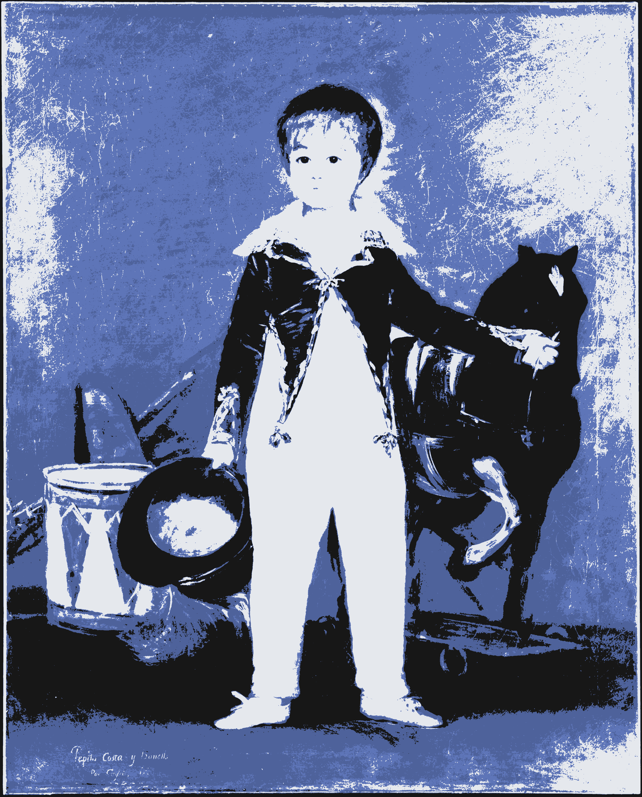

▄▀█
█▀█noche hablé con un robot
Hoy sueño contigo
Suena música de minecraft
El pálido cielo desatura el paisaje
  (#c1c8d4)
Anoche vi tu reflejo en la mesita,
Una sonrisa quebrada
En el mirador de Torre
Hay aviones sin rostro sembrando parejas
Y sin embargo
Ya no quedan amores como el nuestro
Poema de Aniversario
